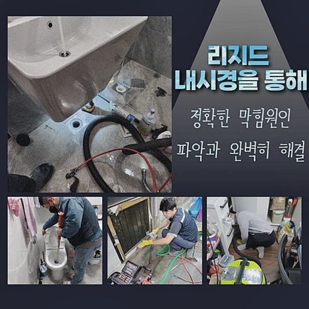
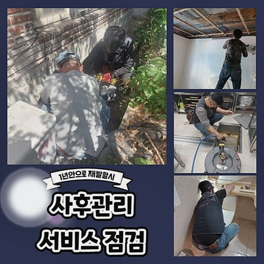
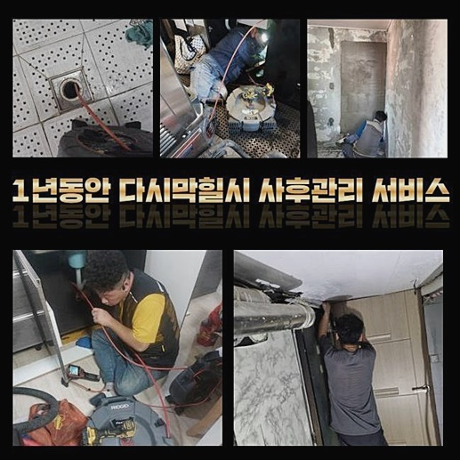
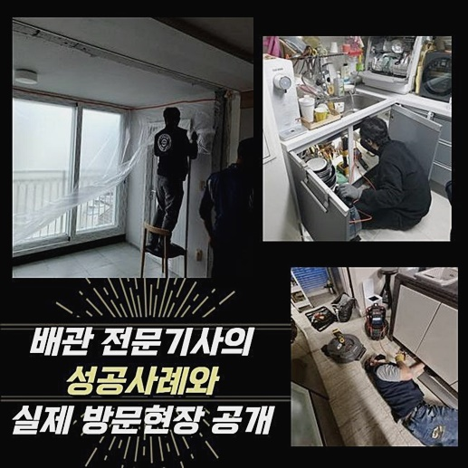
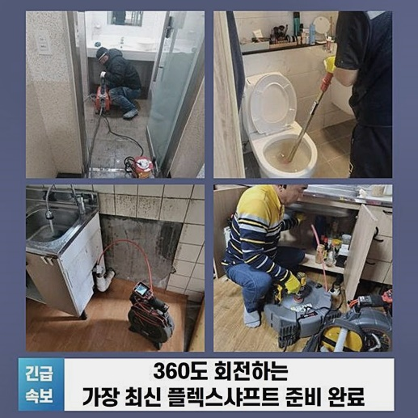
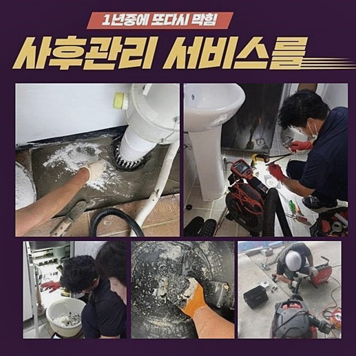
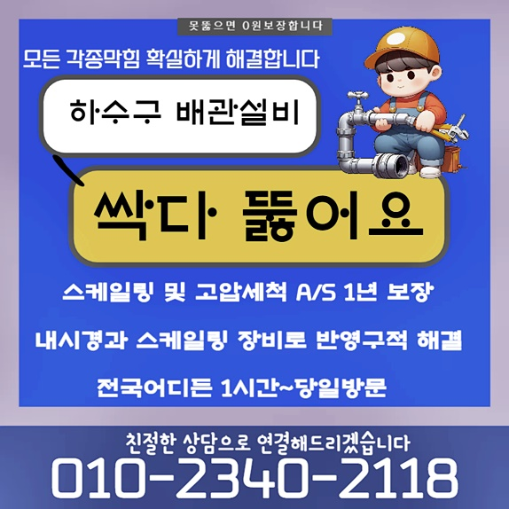

🏠 마포 마포동싱크대역류 창전동 악취차단 설비공사
용인 싱크대막힘 전문 시공 후기

📋 작업 개요
- 위치: 용인
- 서비스 유형: 싱크대막힘, 하수구막힘, 배관막힘, 집수정막힘, 역류해결, 뚫는업체, 배관청소, 고압세척, 설비공사, 악취차단
- 작업 일시: 2024. 9. 9. 10:43
- 업체명: 하수구수사대 (010-5615-2118)
🔍 문제 상황
마포 마포동싱크대역류 창전동 악취차단 설비공사
일상을 영위하면서 하수구를 이용할 때면 여러가지 이유들이 모이다가 결국 물이 차단되는 현상이 불가피하게 벌어지곤 해요
식당이나 가정집 등 여러 타입의 건물들에서 하수시스템의 고장은 특별한 일이 아닙니다
수로의 회복을 위하여 숙련가를 수소문하고 계시면 장비 보유량도 넉넉하고 오류의 원인을 식별하고 작업에 임하는 곳들을 고르는 안목이 필요합니다
오늘 찾아간 방문지는 하루에도 수백명이 이용하는 공동 화장실이었고 물이 어느순간 막혔다며 언제 와줄 수 있냐고 여쭤보셨죠
입점한 점포직원분과 방문객들이 같이 이용해야만 하는 시설이니 일반적인 주거지에 비해서는 정체를 빚는 일들이 보다 시도때도 없이 발생하곤 해요
이번에 전화주신 당사자분은 단순하게 막힌 적은 많았어도 막히고 치솟기까지하는 상황 자체가 첫 번째로 체험하는 일이라며 수습이 도저히 안된다고 하소연 하셨습니다
특히나 여러 방문객들이 각자 다용도로 사용하는 장소이기에 더욱 빠른 정상화를 도모해야할 케이스라고 여겨져 당일에 오류를 교정해 나갔어요
동일한 일들로 접수를 하고 내방드리면 현황을 검토하니 기저의 사유는 스펙트럼이 넓게 나와서 구체적인 조사에 들어가여 문제의 시작점을 발굴해 주는 전문가의 손을 빌려야 합니다
출장을 간 이후에는 관측할 수 있는 환경을 구축하고 무슨 원인이 있으며 어떤 작업이 괜찮을지를 탐색을 해주었습니다
통계적으로 보자면 실내에서의 진단만으로도 모든 청소과정이 달성되는 곳이 있지만 조금 더 까다롭다면 외측의 하수구 환경까지 철저히 상황을 분석해야만 결론이 나는 때도 있어요

🔎 원인 분석
💡 전문가 진단: 정밀 진단 장비를 사용하여 슬러지의 고착 여부를 판명하고 타격/세척 작업을 실시했습니다.
오늘 소개드리는 곳 역시 외부의 하수관에 이르기까지 진작에 문제점이 발생했기에 완성도를 높이려는 전개가 호락호락하지는 않았어요
어마어마한 악취가 공기에 자욱하게 퍼져버린 상태였으며 역류 현상까지도 오염되어 있었기에 원인 규명을 가장 먼저 출발해야겠다 싶었죠
곳곳에 짙게 퍼져버린 고약한 냄새가 형성되는 지점부터 작업을 실시했는데 더러운 오염물질과 찌꺼기가 끼어서 물이 내려가기가 곤혹스러운 상태다 싶었어요
설치된 파이프 구조에서 바깥쪽으로 가는 관로에 붙어져 있는 형태라면 일부 배출구만 막혀도 이와 같은 전체 중단이 연쇄적으로 발현될 수 있습니다
진단을 시작한 해당 입구만 조사를 마쳐봐도 실태가 위중한 경우라는 점을 식별할 수 있었죠
바닥에서 흘러들어간 흙도 다량 누적되어 있었고 시야가 트이지 않을만큼 가득 차서 촬영 기기를 배정하는 일도 힘들만큼 통로가 협소했어요
빠른 진행을 위해서 겉부분에 끼인 물질을 제거하고 검사 도구가 들어갈만한 길목을 열어서 안을 디테일하게 살펴보기 시작했네요
설비 문제로 인해서 막막함을 겪으시는 고객님 중 몇분은 간혹 전문적 지식기반 없이 뚫음을 적극적으로 선뜻 나서시기도 해요
혼자 간단히 처리할 수 있는 뚫는 방안만으로는 제대로 된 하수구 청소는 도출하기 힘들 겁니다
파이프로 떨어진 작은 잔해들은 시간이 흐르면 흐를수록 덩어리화되고 배관과 밀착되어 한몸이 되니 뜯어내는 중에 타격감을 불러일으킬 수 있어요
게다가 뭉쳐있는 정도롤 더 어렵게 만들 수도 있기 때문에 반드시 우수한 스킬을 쌓아온 전문 업체와 연을 맺어서 해결을 보셔야 하는데요
이물질을 끌어당기는 석션기기는 흡수력이 타의 추종을 불허하기에 부피감이 크고 묵직한 찌꺼기들도 어려움 없이 바깥으로 꺼낼 수 있어요

🔧 작업 과정
배수로 출입구에 덮힌 마개를 뽑아내고 석션을 짧게 가동시켰을 뿐인데 막대한 양의 여러 형상의 물질들이 밖으로 밀려나온 결과물을 보게 됐네요
외부 시스템과 접합된 배관의 내면도 예외 없이 촬영을 이어가 봤더니 흐름의 중간 지점이 통제되어 버린 장면을 직면하게 되었는데요
통로의 규모가 그렇게 크지 않은데다가 장기간 누적된 잔량들이 둥지를 트고 앉아서 폭을 더욱 협소하게 만들어 버렸습니다
내부에서 쭉 고여있던 오물들이 적층이 되면서 커지다보니 통수가 마비되면서 내용물이 겉으로 범람하는 일까지 유발된 것으로 보였습니다
살짝 더 넓어진 통로로 석션기를 동등하게 청소를 실시해 봤는데 이전과 다를 바 없이 불결한 이물질들이 잔뜩 뒤섞여서 주르륵 뿜어져 나오더라고요
다양한 장소들에 찾아가 보면 파이프 벽을 따라 오물이 말라붙은 형상도 자주 접할 수 있습니다
이처럼 심각하다면 전문적인 소양 없이 주먹구구로 세척 루틴을 통해서는 문제를 풀어갈 수 없어요
살짝 물이 빠지는 듯 일시적으로는 개선되더라도 곧 또다른 막힘이 도래할테니 소요되는 기간과 비용만 들어가는 아까운 결과를 낳습니다
옥외에 위치한 큰 집수정까지 일제히 마비될 때가 많아서 여러 요인들을 종합해서 청소에 들어가야 합니다
배수로의 낡음 정도와 순차적인 동선을 정해서 장애 요인을 제거하는 본 단계에 돌입하게 됐어요
넓은 영역이 더럽혀졌으면 풍기는 냄새도 상당하게 농후해 질 것이므로 대수롭지 않게 여기시지 말고 조금이라도 속도를 높여서 내부 정비를 요청해야 합니다
배관의 형상을 따라서 찌꺼기들이 바싹 굳어서 옴짝달싹을 하지 않아서 높은 압력의 물살을 통하여 막힘을 다루어 나갔습니다
강력하게 압축된 온수를 부착된 오물을 기점으로 쏴서 흔한 도구들로는 완수를 보지 못한 잔여한 찌꺼기들을 즉시 씻어내리는 것을 이 작업이 담당합니다
거대한 정화조 시설이나 다량의 물이 빠지는 메인 관로는 막힌 것이 수월하게 나아지지 않는데 이때 이런 고압 이용이 가능한 장비를 적용해서 성과를 내고 있습니다
좀처럼 떨어지지 않는다 싶으면 세기를 올려 해당 부분이 처리할 수 있게끔 꼼꼼히 작업을 하니 점점 노폐물이 사라지는 모습을 최종적으로 확정할 수 있었어요!
고압수를 쏘는 절차로 청소해 나갔더니 종국에는 새것처럼 반질반질 닦여서 상쾌함과 후련함이 찾아왔네요!
특히나 이 장치는 어떤 기계들을 동시에 접목하는 것보다 하수관 이슈를 무리 없이 커버할 수 있으니 만에 하나를 대비해 가져다닙니다
외부에서의 활동들을 마무리하면 화장실 공간에서 통수검사를 실시하면서 기능회복이 됐나 재차 확인해 보게 됩니다
내부의 고착화된 물질들을 정비했더니 근처에서 찡그리게 만들던 악취가 순식간에 잡혀서 고객님께서도 기뻐하셨답니다


✅ 작업 완료
하수관과 관련된 이슈들은 어느 곳에서든 불현듯 빚어질 수 있는 사고이니 자가수리 보다는 전문 서비스를 받아보시길 추천드려요
현장마다 유연하게 변화하는 자세를 토대로 맞춤 시공을 한 후에도 지속적 관리를 해주는 곳으로 정하시는 것이 중요합니다
같은 증상으로 연락을 받아도 건물 구조와 형상이 다르고 배관의 규모나 속성도 판이하게 다르므로 많은 요인들을 분석해 보고 방향을 정하는게 중요합니다
문제의 근원부를 제대로 추적하고 야무지게 정화해 나가는 전문진을 찾으셔야만 부족함이 없는 완성본을 제공받으실 수 있어요
급하실 때 바로 전화주신다면 내 집이라고 여기고 어려운 점들을 도와드리겠습니다




⚠️ 주방 싱크대 배관 막힘 예방 수칙
- ✅ 기름기가 묻은 식기나 프라이팬은 설거지 전 키친타올로 반드시 기름때를 닦아내세요.
- ✅ 주기적으로 싱크대 개수대에 뜨거운 물을 가득 받아 한 번에 내려 배관 내부 기름을 씻어내세요.
- ✅ 배수구 거름망을 미세한 필터로 사용하시고 음식물 찌꺼기가 틈으로 새어 들지 않게 관리하세요.
- ✅ 베이킹소다와 식초를 뜨거운 물과 함께 일주일에 한 번씩 부어주면 배관 살균과 막힘 예방에 좋습니다.
💡 핵심 정리
- 확실한 장비 작업(내시경 점검 및 샤프트 스케일링)으로 원인을 뿌리 뽑습니다.
- 작업 후 1년 이내에 동일한 부위 재발 시 100% 무상 A/S 서비스를 보장합니다.
- 서울 · 경기 · 인천 전 지역에 24시간 언제든 긴급 출동할 수 있도록 항시 대기 중입니다.
❓ 자주 묻는 질문 (FAQ)
🚨 용인 싱크대막힘 문제로 고민이신가요?
정확한 원인 진단과 확실한 시공으로 재발 없는 해결을 약속드립니다.
24시간 긴급 출동 | 서울 · 경기 · 인천 전지역 | 1년 내 재발 시 무상 A/S